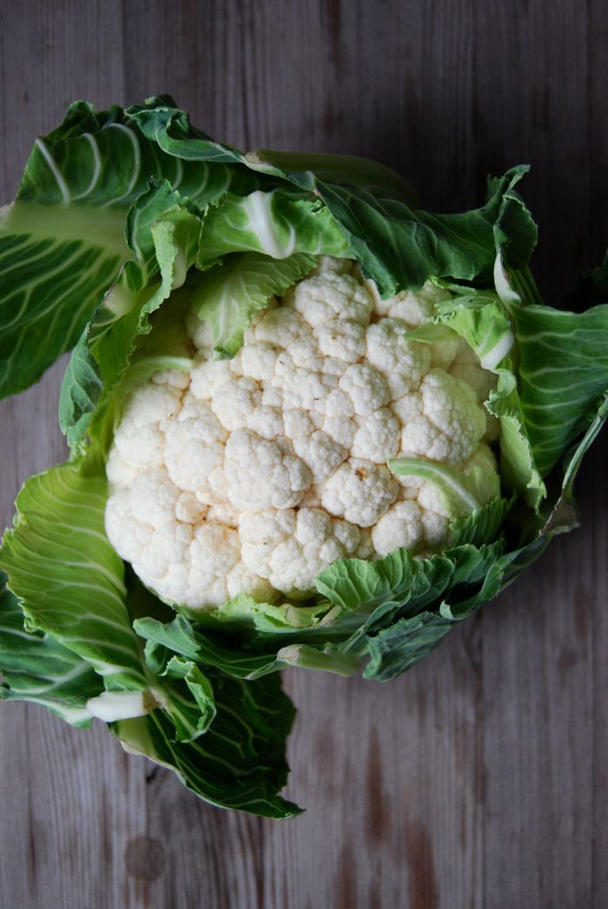

Couve-flor
🌱 Como cultivar
A couve-flor prefere clima ameno a frio, com temperaturas entre 15 °C e 20 °C. O solo deve ser fértil, rico em matéria orgânica, bem drenado e com boa umidade. É importante manter a irrigação constante e retirar plantas daninhas. A colheita geralmente ocorre 90 a 120 dias após o plantio, quando a cabeça (inflorescência) está firme, compacta e bem desenvolvida.
🍽️ Receitas
💡 Curiosidade
A couve-flor na verdade é uma flor que nunca se abriu! O que a gente come é a inflorescência ainda fechada da planta — se deixada no pé por mais tempo, ela se abriria em várias florzinhas amareladas..